rm(list = ls())2 Lab: Exploratory Data Analysis - UK Election
2.1 Overview
This week’s practical session will draw upon the UK 2024 constituency election dataset. We will revisit some libraries and functions we have used last week, but also learn to do our first exploratory data analysis by foundmental R coding. We will do:
Loading and examining tabular data (like spreadsheets) and geographical data into R (same as Week 1)
Exploratory Data Analysis (or EDA) of numeric variables and categorical variables
Using histogram, boxplot, barplot to understand the distribution of variables
Variable interactions, particularly cross-tabulation and between-group comparison
You may wish to recap this week’s lecture: Lecture 02.pptx
2.2 Clear the decks
For this Week 2 session, create a sub-folder called
Week2in yourENVS162folder on your M-Drive.Open RStudio
Open a new R Script for your Week 2 work, rename it as Week2.R and save it in your newly created Week 2 folder, under M drive -> ENVS162 folder. This is exactly the step we did in Week 1, and we will do this every week to Week 5.
Check whether there is any previous left dataframes in your RStudio in the upper-right side Environment pane. You can always use the to clear all the dataframes in your environment and make it all clean. For the same aim, you can run the below code:
This command will clear RStudio’s memory, removing any data objects that you have previously created.
2.3 Open libraries
In Week 1 we have installed essential R package tidyverse, sf, and tmap. Remember if any package has been installed, then we don’t need to re-install them. Instead, we use library() command to import and use them.
As ever, when you start a new session in RStudio, you need to load the packages you wish to use into memory. Similarly, there are tidyverse, tmap and sf packages we’ve used last week.
library(tidyverse)
library(sf)
library(tmap)If R returns Error: there is no package called ‘***’. Then it means that the package ‘***’ has not been installed in the PC you current use. Therefore you need to install them first. Switch back to Week 1 instruction - Getting set up with RStudio - Your first R code - Package part to refresh yourself how to do this.
2.4 Parliamentary Constituency Data
2.4.1 Load the dataset
In 2024 the UK held a general election. Download the file uk_constituencies_2024.csv from our Canvas module page Week 2. Save the dataset in your M drive - ENVS162 - Week 2 folder, alongside the Week 2. R script. Read in the dataset exactly in the same way as we did in Week 1 - insert the below code line and run it:
pc_data <- read.csv("uk_constituencies_2024.csv",stringsAsFactors = TRUE)The datasheet captures a range of information relating to this election, and to the nature of each parliamentary constituency. By using read.csv() command, we use R to store the dataset in a dataframe called pc_data (short for Parliamentary Constituency data).
The pc_data dataset should appear in your RStudio Environment Pane on the upper right part, indicating that it has now been loaded into memory, and is available for analysis.
For your information only, the pc_data dataset has been assembled by combining information from the following sources.
HoC-GE2024-results-by-constituency.xlsx
Source: Cracknell et al (2024) General election 2024 results, Research Briefing, House of Commons Library. https://commonslibrary.parliament.uk/research-briefings/cbp-10009/
Demographic-data-for-new-parliamentary-constituencies-May-2024.xlsx
Source: House of Commons Demographic data for Constituencies https://commonslibrary.parliament.uk/data-for-new-parliamentary-constituencies/
NatCen Constituency Data_20 June 2024.xlsx
Source: National Centre for Social Research (2024) Parliamentary constituency look-up, https://natcen.ac.uk/constituency-look-up (date accessed: 07-02-2025)
nomis_2025_01_14_101749.xlsx
Source: Income data from Annual Survey of Hours and Earnings (ASHE), collecgted by the Office for National Statistics. https://www.nomisweb.co.uk/datasets/asher
2.4.2 Familiar with the dataset and variable types
In the pc_data dataset each row represents a different UK Parliamentary Constituency. Use the View() command to familiarise yourself with the variables contained in the dataset.
View(pc_data)Use the nrow( ) or dim() command to find out how many Parliamentary Constituencies (and therefore MPs) there are in the UK.
nrow(pc_data)
dim(pc_data)Whenever we try to understand the variables in one dataset, the first question to ask ourselves is: “are they continuous or categorical ?”
Continuous variables are numeric measures of some quantity, such as a count or percentage or a precise value. E.g. number of valid votes; % of persons unemployed etc.
In contrast, categorical variables simply group observations into categories or ranges. E.g. name of the winning party; age group etc.
Explore the structure of the data table using the str function and have examined it by head functions.
str(pc_data)
head(pc_data)We can see that we have numeric data in integers (int) form (these are counts or whole numbers) and continuous (num) form, and the character variables (text) have been converted to factors. For each of these data types we can generate numeric and visual summaries and we can also see how they interact with each other.
The pc_data dataset contains three basic sets of information about each Parliamentary Constituency:
constituency identifiers - gss_code and pc_name
population information for each constituency, ranging from the total population and number of households through to the % in various categories to information about local house prices, salaries and crime rates
2024 election results ranging from the winning MP and party through to the size of the electorate and vote turnout, and the share of votes received by each party
2.4.3 Exploratory Data Analysis (EDA)
2.4.3.1 Numeric variables
You can use the pc_data dataset to extract some headline results from the 2024 General Election. Starting with the simplest case, the distribution of a single numeric variable whether continuous or count based can be examined numerically using the summary function.
#valid votes in constituency
summary(pc_data$valid_votes) Min. 1st Qu. Median Mean 3rd Qu. Max.
13528 40397 44628 44322 48607 57744 # percentage of White British in constituency
summary(pc_data$pct_White_British) Min. 1st Qu. Median Mean 3rd Qu. Max.
8.937 71.534 86.208 78.006 92.843 98.664 A visual approach is more intuitive. The code below plots histograms of the two variables, using the hist function. The logic under-pinning a histogram is that a continuous variable (in this case valid_votes and pct_White_British) is temporarily regrouped into categories, using an equal-interval approach. The number of observations (in this case, constituencies) that fall into each equal-interval category then determine the height of each column in the histogram.The comments after each line shall inform you what the main and xlab in the function mean:
# histograms
hist(pc_data$valid_votes,
main = "Valid votes in constituency", #change chart title
xlab = "Votes") #change x axis label 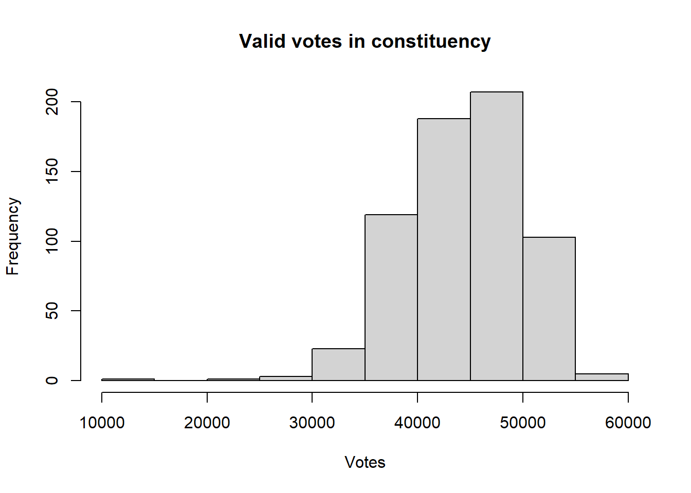
hist(pc_data$pct_White_British,
main = "Histogram of % White British in constituency",
xlab = "Percentage",
col = "dodgerblue") #change bar color to dodgerblue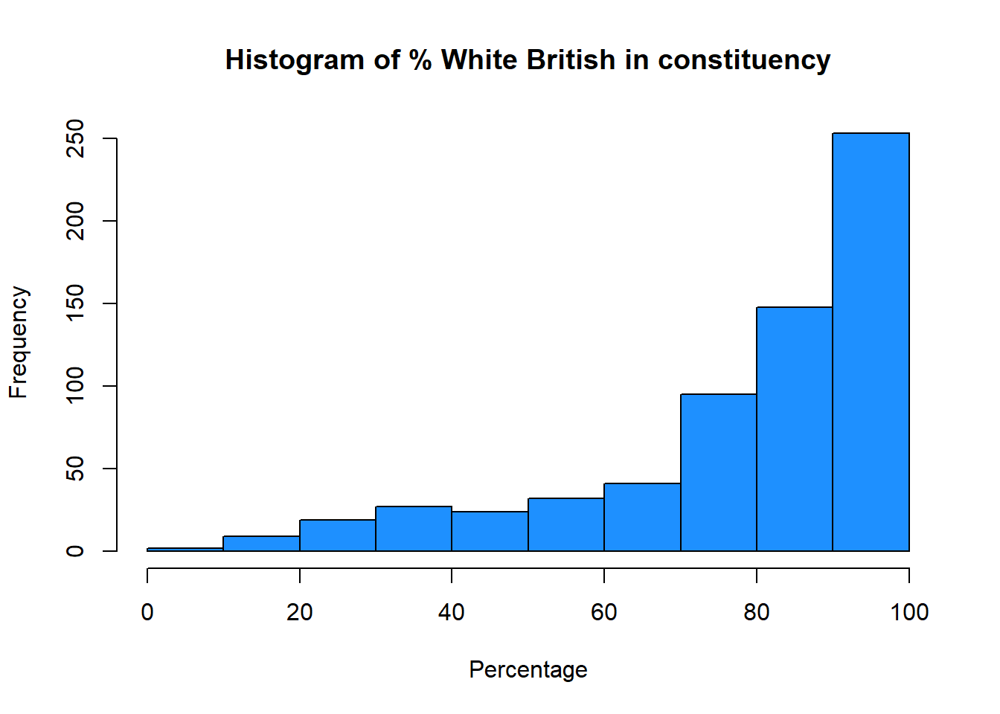
You may noticed that valid_votes has a relatively normal, bell-shaped distribution whereas the pct_White_British variable is left skewed (negatively) distribution.
We can examine the how these distributions relate to central tendencies (mean, median) and spread, using standard deviations for means and the IQR (Inter-Quartile Range) for medians.
From the numeric summary above, the mean of pc_data$valid_votes is 44,322. We can determine the spread around this value by calculating the standard deviation for our sample , as is returned by the sd function in R:
sd(pc_data$valid_votes)[1] 5697.665For a normal distribution, about 68% of observations lie within 1 standard deviation of the mean, and about 95% lie within 2 standard deviations of the mean. So this suggest that 68% of the valid votes are within 5,698 votes of the mean of 44,322 votes, i.e. 38,624 (44322-5698) and 50020 (44322+5698).
We can augment the histogram of the valid_votes variable with this information, requesting R to increase the intervals to 50, and using the abline function to add lines to create the figure below:
# histogram
hist(pc_data$valid_votes, col="forestgreen", main="Valid votes (with mean and std dev)",
breaks = 50, xlab="Votes")
# calculate and add the mean
mean_val = mean(pc_data$valid_votes)
abline(v = mean_val, col = "orange", lwd = 3)
# calculate and add the standard deviation lines around the mean
sdev = sd(pc_data$valid_votes)
# minus 1 sd
abline(v = mean_val-sdev, col = "red", lwd = 3, lty = 2)
# plus 1 sd
abline(v = mean_val+sdev, col = "red", lwd = 3, lty = 2)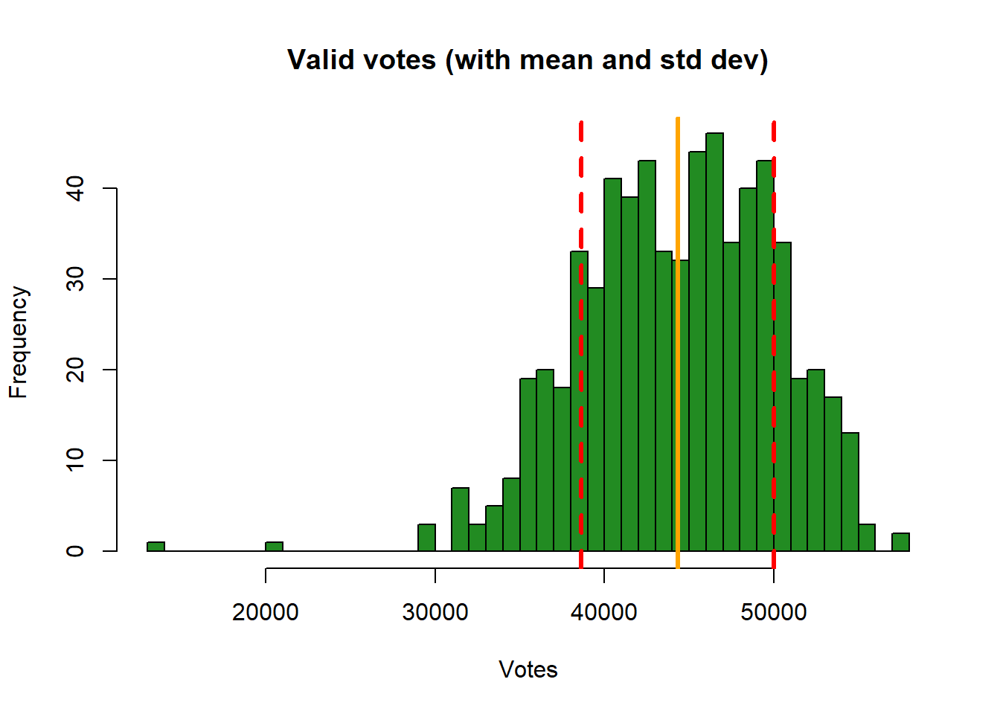
This histogram show the variable valid_votes with the orange solid line as the mean, and dashed red line as the standard deviation. Note that in the call to abline above, note the specification of different line types (lty) and line widths (lwd). Later on, you could explore these as described here.
We can also use density curve to present the variable distribution:
plot(density(pc_data$valid_votes),
main = "Valid votes")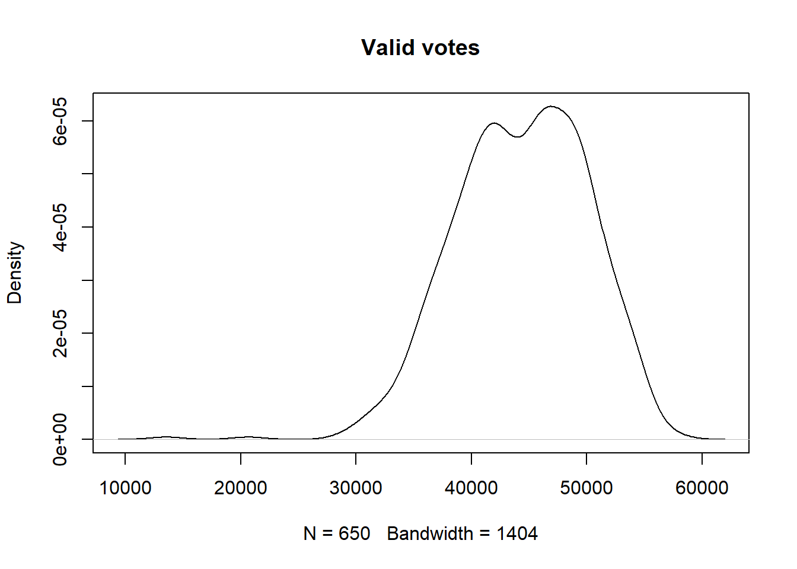
plot(density(pc_data$pct_White_British),
main = "% of White British in Constituency",
col="salmon",
lwd=2)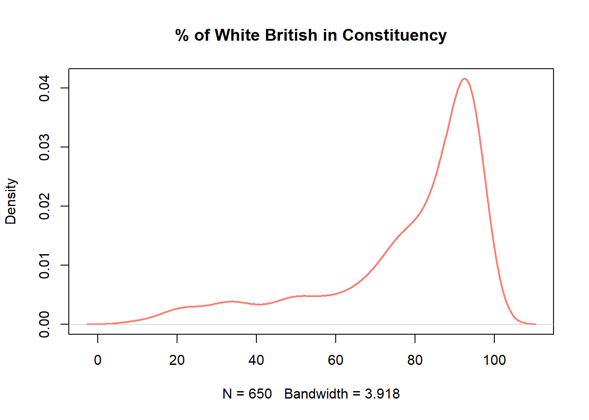
Boxplots show the same information but here we can see a bit more of the nature of the distribution.
Recap Week 2 lecture, the dark line shows the median, the box represents the interquartile range (from the 1st to the 3rd quartile), the whiskers extend to the most extreme non-outlying values, and the dots indicate outliers.
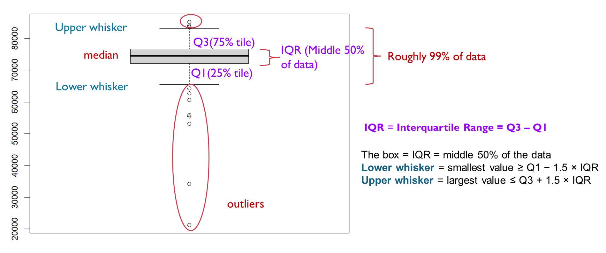
Now let’s check out the boxplots of these two variables:
boxplot(pc_data$valid_votes,
horizontal=TRUE,
main = "Valid votes",
xlab='Votes',
col = "gold")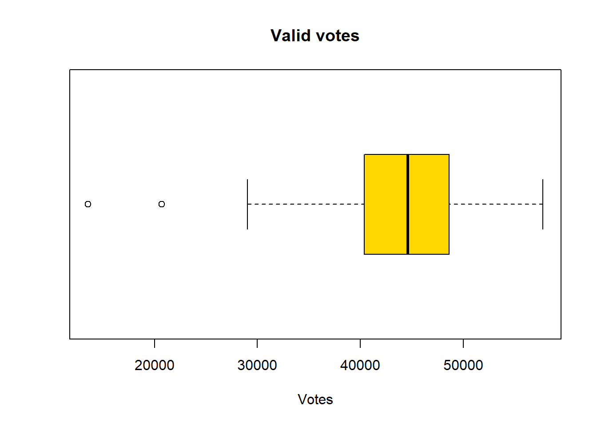
boxplot(pc_data$pct_White_British,
horizontal=TRUE,
main = "% of White British",
xlab='Percentage',
col = "hotpink")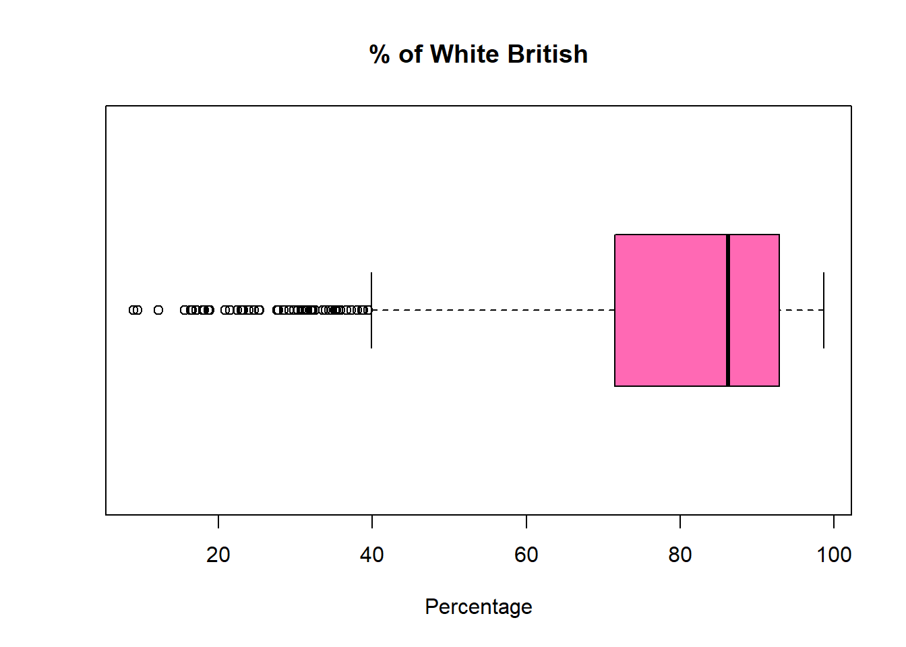
Is the median line in the centre of the box? If the median line is not in the middle of the box, it means the data are skewed, with greater spread on one side of the median.
Median closer to the bottom of the box -> right-skewed (positively skewed) -> some big values pulling up
Median closer to the top of the box -> left-skewed (negatively skewed) -> some small values dragging down
Are the whiskers the same length? This indicates skewness in the distribution. The data have a longer tail on the side of the longer whisker, meaning values are more spread out in that direction.
Are there any outliers? Who has more? Outliers clustered on one side indicate that extreme observations occur predominantly in one tail of the distribution. More outliers indicates the variable hs more extreme or unusual values, possibly a heavier-tailed distribution. But this doesn’t mean the variable is bad or more variable overall.
The size of the boxes? The box represents the interquartile range (IQR), which is the middle 50% of the data as we call them typical. A larger box indicates greater variability in the middle 50% of the variable; a smaller box suggests that values are more tightly clustered around the median.
Now, you should be able to compare how the two kinds of distribution are shown in the the boxplots with a trained eye: The pct_White_British variable is left-skewed, indicating that more values are spread towards lower percentages of White British in the constituency. The box is also larger than that of valid_votes, which suggests greater variability in the central 50% of the data. In addition, the longer lower whisker and the presence of more outliers on the lower end further reinforce the left-skewed distribution.
In summary, numeric variable distributions, of counts and continuous data, should be investigated as an initial step in any data analysis. There are a number of metrics and graphical functions (tools) for doing this including summary(), hist() plot(density()) and boxplot().
2.4.3.2 Categorical variables
Some of the character variables could be considered as categorical, representing a grouping or classification of some kind, as described above. In these cases we are interested in the count or frequency of each class in the classification, which we can examine numerically or graphically.
The simplest way to examine classes is to put them into a table of counts. The table function is very useful and in the code below it is applied to one of the categorical variables in the survey data:
So firstly we use the table() command to find the number of MPs elected to each Party. [Hint: use the first_party variable].
table(pc_data$first_party)
Alliance Conservative DUP Green Independent
1 121 5 4 6
Labour Lib Dems Plaid Cymru Reform SDLP
411 72 4 5 2
Sinn Fein SNP Speaker Ulster Unionist Unionist Voice
7 9 1 1 1 These can be made a bit more tabular in format with the data.frame function, which takes the table operation as its input:
data.frame(table(pc_data$first_party)) Var1 Freq
1 Alliance 1
2 Conservative 121
3 DUP 5
4 Green 4
5 Independent 6
6 Labour 411
7 Lib Dems 72
8 Plaid Cymru 4
9 Reform 5
10 SDLP 2
11 Sinn Fein 7
12 SNP 9
13 Speaker 1
14 Ulster Unionist 1
15 Unionist Voice 1However, if we not only care about the count of MPs but also the proportion? Then we can make a good use of our tidyverse library to run the following code line.
pc_data %>%
count(first_party) %>%
mutate(pct = round(n / sum(n) * 100,1)) first_party n pct
1 Alliance 1 0.2
2 Conservative 121 18.6
3 DUP 5 0.8
4 Green 4 0.6
5 Independent 6 0.9
6 Labour 411 63.2
7 Lib Dems 72 11.1
8 Plaid Cymru 4 0.6
9 Reform 5 0.8
10 SDLP 2 0.3
11 Sinn Fein 7 1.1
12 SNP 9 1.4
13 Speaker 1 0.2
14 Ulster Unionist 1 0.2
15 Unionist Voice 1 0.2Here you are using two very useful functions in the library tidyverse.
First, the count() calculate the frequency of different categories in the first_party and use a new column n to store the frequencies - it actually do the same thing as above code, but better in presenting as a table;
Second, the mutate() function to assist use create a new column pctand fill in the value by the calculation pct = n / sum(n) * 100.
The %>% is used to link these two commands: count() and mutate(). You can insert %>% in your R script by using ctrl + shift + M for Windows and Cmd + Shift + M on Mac.
Therefore, when you run the code, you will see a table showing as three column: first part name, a new column automatically named as n by R after the count() function, and count of the party MPs, and a new column called pct and with values calculated by n / sum(n) * 100. We use round() function to keep only 1 digits for the pct.
We can also improve the code to make a better table presentation. You may find the comment text after each code line would be useful to understand what R has done to the pc_data.
#Calculate the frequency and percentage of different categories for "first_party"
pc_data %>%
count(first_party) %>%
mutate(pct = round(n / sum(n) * 100,1)) %>%
arrange(desc(n)) %>% #sort the table by number of MPs from more to less
setNames(c("First Party", "Number of MPs", "% of MPs")) #rename table column names First Party Number of MPs % of MPs
1 Labour 411 63.2
2 Conservative 121 18.6
3 Lib Dems 72 11.1
4 SNP 9 1.4
5 Sinn Fein 7 1.1
6 Independent 6 0.9
7 DUP 5 0.8
8 Reform 5 0.8
9 Green 4 0.6
10 Plaid Cymru 4 0.6
11 SDLP 2 0.3
12 Alliance 1 0.2
13 Speaker 1 0.2
14 Ulster Unionist 1 0.2
15 Unionist Voice 1 0.2In this code chuck, we requested four command to the dataframe pc_data, and linked them with %>% :
count()function to summarises the data by counting the number of observations in each group;mutate()function to create a new column named “pct” as we did above;arrange()function sorts the rows,desc(n)function decending the norder ofn, together they order the category with the highest counts first;setNames()function renames the results.
Similarly, we can use the categorical variable crime_rate in the pc_data dataset to understand the crime status of all the constituencies:
#Calculate the frequency and percentage of different categories for "crime_rate"
pc_data %>%
count(crime_rate) %>%
mutate(pct = round(n / sum(n)*100, 1)) %>%
arrange(desc(n)) %>%
setNames(c("Crime rate", "Number of Constituency", "% of Constituency")) Crime rate Number of Constituency % of Constituency
1 Much higher 118 18.2
2 Higher 115 17.7
3 Average 114 17.5
4 Lower 114 17.5
5 Much lower 114 17.5
6 <NA> 75 11.5What you have learnt from the result table? It seems that there is a quite equally distribution across the five categories of crime rate, although there are 11.5% of the constituency are missing their crime rates.
Categorical data can be visualised using bar plots of the tabularised data. The code below does this by creating a table, changing the names of the table and passing that to the barplot function:
#calculate the frequency of first party and save the result in table 'tab', present tab as a barplot
tab = table(pc_data$first_party)
barplot(tab)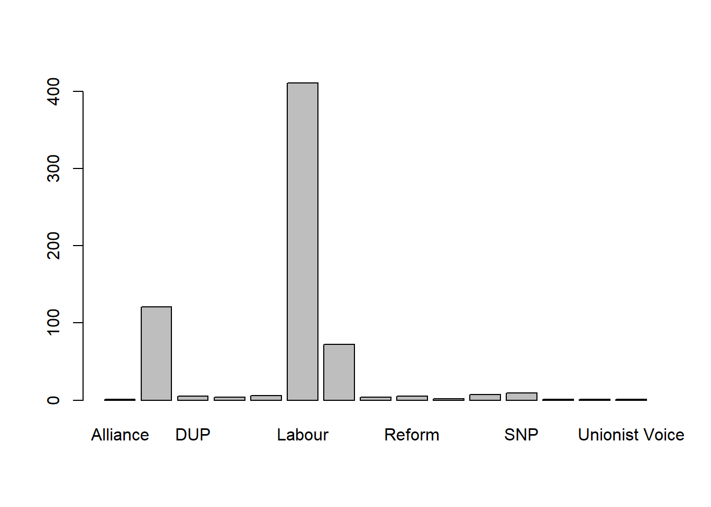
It is very simple to get the barplot from the result of table(). But it may need some improvement. As you may noticed, there are many bars have rarely no values, and too crowd x axis labels makes some bar label can’t able to show. Therefore, we probably don’t need to show all the parties, but only the top 8 in terms of their winning constituencies.
#sorted tab by the frequency from highest to lowest, present the top 8 of the sorted tab
tab_sorted <- sort(tab,decreasing = TRUE)
barplot(head(tab_sorted,8),las = 2, main = "Top 8 of first party") 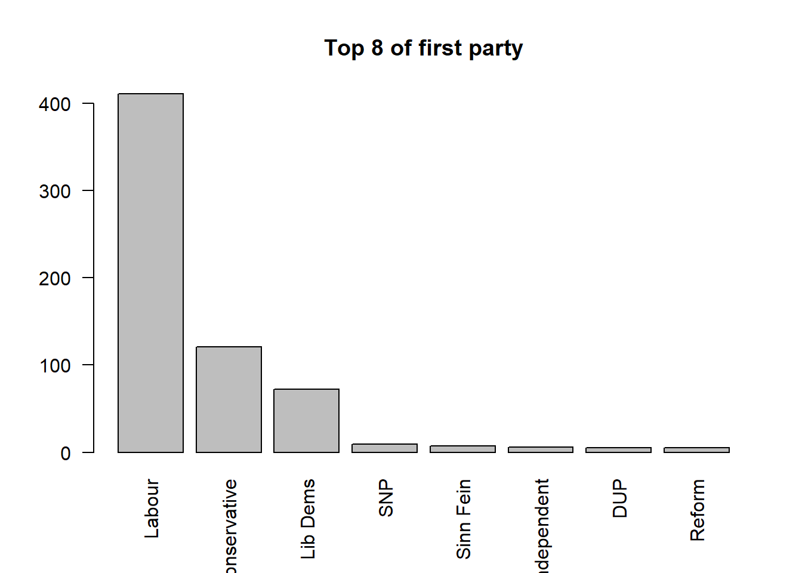
In this code chunk, we first use sort() to reorder the tab ranking the parties based on the counts from highest to lowest. You may ask R to show how tab_sorted looks like:
#show tab_sorted
tab_sorted
Labour Conservative Lib Dems SNP Sinn Fein
411 121 72 9 7
Independent DUP Reform Green Plaid Cymru
6 5 5 4 4
SDLP Alliance Speaker Ulster Unionist Unionist Voice
2 1 1 1 1 Then, using barplot(), we plot the top 8 rows of tab_sorted, with las = 2 used to rotate the axis labels so they are displayed vertically and remain readable.
2.4.3.3 Categorical to categorical: cross-tabulation
In EDA, it is also important to understand the relationship between variables. Now it is the time to do the variable interactions. Let’s first start with interact one categorical variable to another categorical variable. In many situations, it can be called cross-tabulation.
The relationship between two sets of classes or categories can be explored using correspondence tables created by the table function. Here we can cross tabulate the two categorical variables that we have already familiar with: first_party and crime_rate:
If we want to examine how the distribution of crime-rate categories varies for each first party. The question can be: for each political party, how are its wins distributed across different crime-rate levels?
# cross-tabulation first_party vs.crime_rate
table(pc_data$first_party, pc_data$crime_rate)
Average Higher Lower Much higher Much lower
Alliance 0 0 0 0 0
Conservative 25 6 44 0 41
DUP 0 0 0 0 0
Green 1 0 0 1 2
Independent 0 3 0 2 0
Labour 79 101 47 115 32
Lib Dems 6 2 20 0 38
Plaid Cymru 0 0 3 0 1
Reform 2 3 0 0 0
SDLP 0 0 0 0 0
Sinn Fein 0 0 0 0 0
SNP 0 0 0 0 0
Speaker 1 0 0 0 0
Ulster Unionist 0 0 0 0 0
Unionist Voice 0 0 0 0 0Conversely, we can also examine how the distribution of first parties varies across different crime-rate categories.The question this time is: for each crime-rate category, how are different parties distributed?
# cross-tabulation crime_rate vs first_party
table(pc_data$crime_rate, pc_data$first_party)
Alliance Conservative DUP Green Independent Labour Lib Dems
Average 0 25 0 1 0 79 6
Higher 0 6 0 0 3 101 2
Lower 0 44 0 0 0 47 20
Much higher 0 0 0 1 2 115 0
Much lower 0 41 0 2 0 32 38
Plaid Cymru Reform SDLP Sinn Fein SNP Speaker Ulster Unionist
Average 0 2 0 0 0 1 0
Higher 0 3 0 0 0 0 0
Lower 3 0 0 0 0 0 0
Much higher 0 0 0 0 0 0 0
Much lower 1 0 0 0 0 0 0
Unionist Voice
Average 0
Higher 0
Lower 0
Much higher 0
Much lower 0What insights now you can learn from these cross-tabulation? We will examine methods for determining whether the cross-tabulated counts and their differences are significant (i.e. would not be expected by chance) in later weeks.
2.4.3.4 Continuous to categorical: compare between groups
We may also be interested in the exploring differences and similarities in the continuous variables associated with for each categorical class. This can be done using multiple boxplots.
If we want to make boxplots of each party by the value median house price of the constituencies who vote for this party as their first party:
#create boxplots by median_house_price for each first_party
par(mar = c(10, 4, 4, 2)) # increase the margin of the chart for each side: bottom, left, top, right
boxplot(median_house_price ~ first_party,
data = pc_data,
las = 2, #vertical present item label
xlab="", #no x axis label
ylab="", #no y axis label,
main="Compare constituency median house price vs. first party")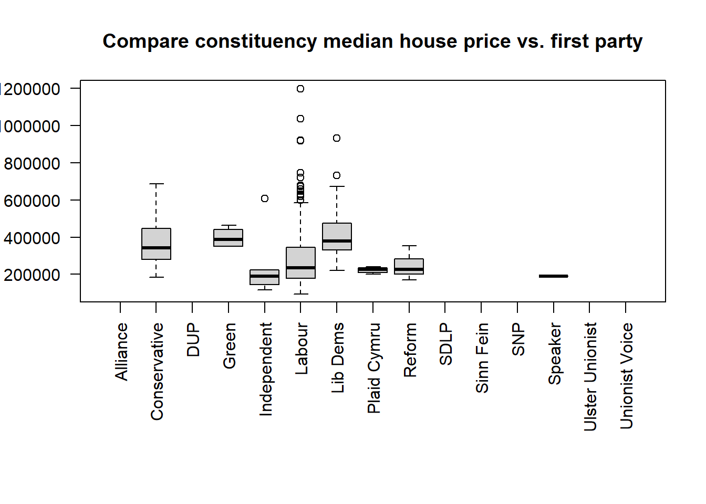
If we want to explore the % of White British in the constituencies and compare the distribution between different MP genders. The code below shows that, compared with constituencies represented by male MPs, those with female MPs generally have a lower proportion of White British population. This distribution also exhibits clear skewness towards lower percentages of White British residents.
boxplot(pct_White_British ~ mp_gender,
data = pc_data,col=c("red", "yellow3"), #specify bar colors
horizontal = TRUE) #horizonal the boxplot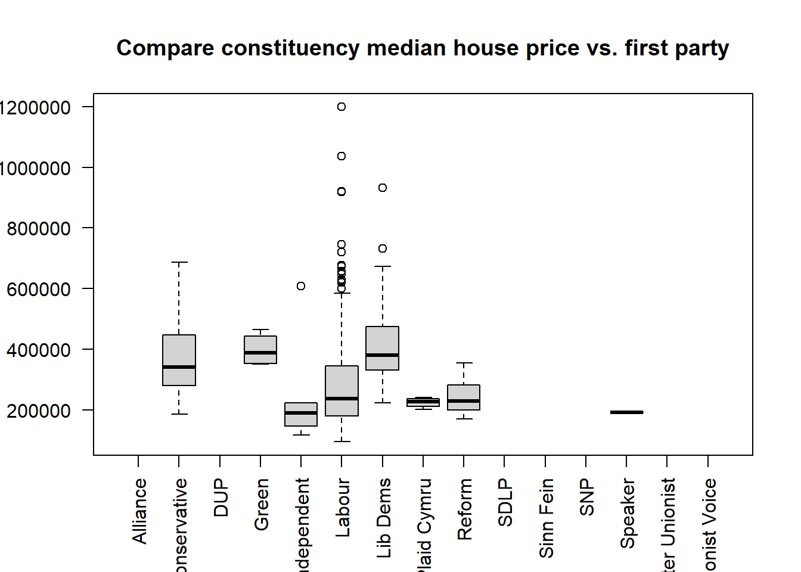
We can do this numerically as well, but it is a bit more convoluted using the with and aggregate functions:
with(pc_data, aggregate(pct_White_British, by=list(mp_gender) , FUN=summary)) Group.1 x.Min. x.1st Qu. x.Median x.Mean x.3rd Qu. x.Max.
1 Female 15.587153 65.775762 84.276710 75.207471 92.374361 98.663686
2 Male 8.936846 74.343213 87.344901 79.907108 93.326348 98.6526162.5 Make your own map for the election result
Having established how many MPs and votes each party got, it is time to look at the geography of the election outcome. To do this we need to link a set of digital boundaries for Parliamentary Constituencies with our pc_data dataset.
2.5.1 Read in Parliamentary Constituency Boundaries
Digital boundaries for the Parliamentary Constituencies used in the 2024 General Election can be found in the files uk_constituencies_2024.gpkg from the Cavans module page. Download and save it in the Week 2 folder as well.
As Week 1, we use st_read() function from library(sf) to read in this geographical boundary dataset.
#read the boundaries as a spatial dataset
pc_map <- st_read("uk_constituencies_2024.gpkg") Reading layer `uk_constituencies_2024' from data source
`C:\Users\ziye\Documents\GitHub\quant\labs\uk_constituencies_2024.gpkg'
using driver `GPKG'
Simple feature collection with 650 features and 9 fields
Geometry type: MULTIPOLYGON
Dimension: XY
Bounding box: xmin: 191.9359 ymin: 7423.9 xmax: 655599.6 ymax: 1218591
Projected CRS: OSGB36 / British National Grid2.5.2 Inspect the spatial dataset
Use the names() or str() to know the contents, or as above use View() to open and check. Check by yourself the number of rows and columns of the map data:
str(pc_map)View(pc_map)The pc_map dataset contains the standard set of Parliamentary Constituency boundaries:
#make a map of constituency
tm_shape(pc_map) + #map a spatial data
tm_polygons() #map it as polygonsor we can make a colorful map by using different color for different regions:
#make a map of constituency and color each polygon based on "region_name", using different color from palette "Set3" for each "region_name"
tm_shape(pc_map) + #map a spatial data
tm_polygons("region_name",
palette="Set3") ── tmap v3 code detected ───────────────────────────────────────────────────────[v3->v4] `tm_tm_polygons()`: migrate the argument(s) related to the scale of
the visual variable `fill` namely 'palette' (rename to 'values') to fill.scale
= tm_scale(<HERE>).
[cols4all] color palettes: use palettes from the R package cols4all. Run
`cols4all::c4a_gui()` to explore them. The old palette name "Set3" is named
"brewer.set3"
Multiple palettes called "set3" found: "brewer.set3", "hcl.set3". The first one, "brewer.set3", is returned.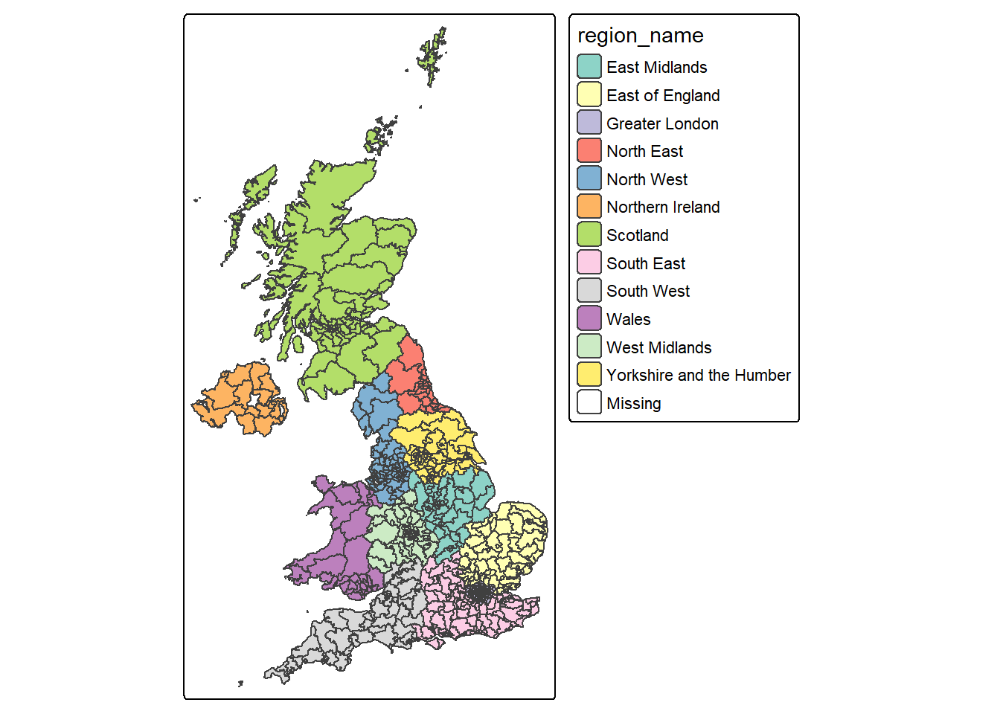
2.5.3 Link boundaries to pc_data
In order to map the election results contained in the pc_data dataset, we need to join it to a set of digital boundaries using the left_join( ) command - you should have already familiar with this from Week 1.
In your inspection of the pc_data and pc_map datasets, you may have noticed that they all have two variables in common. The first is a unique identifier for each Parliamentary Constituency: gss_code. The second is the name of the constituency: pc_name.
We can use these two variables to first link the pc_data dataset to the standard map:
#left join pc_data to pc_map, joining when gss_code from pc_map equals to pc_name in pc_data
pc_map_new <- left_join(pc_map, pc_data, by = c("gss_code", "pc_name")) As ever, having created a new dataset, use the dim( ), str( ), names( ) and View( ) commands to check its contents are as you would expect.
2.5.4 Map the election result
Having joined the pc_data dataset with a set of digital boundaries, it becomes a simple matter to map the election results using the mapping skills covered in Week 1:
#make a map for the pc_map_new, fill the colors for each polygon based on "first_party", using colors from palette "Paired"
tm_shape(pc_map_new) + #map a spatial data
tm_polygons(fill = "first_party",
fill.scale = tm_scale(values="Paired")) #map it as polygons, use different colors by first_party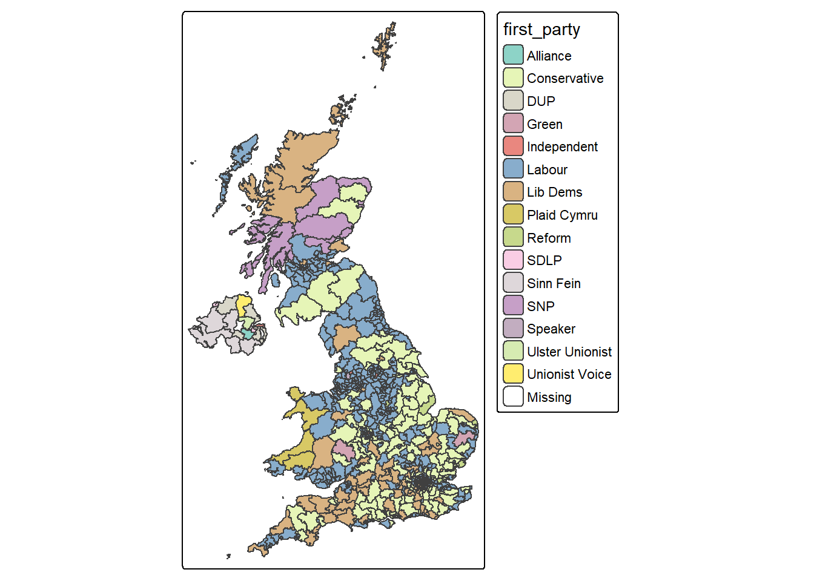
This time, let’s change the mode of tmap by using tmap_mode() from default “plot” to “view” for an interactive map:
# make the map interactive
tmap_mode("view")
tm_shape(pc_map_new) +
tm_polygons("first_party") This time, in your right-bottom pane, the map should be plotted in Viewer tab as an interactive map. You can zoom in/out to explore your map, for a better view, you can click the to open a webpage.
You may need to switch tmap_mode() back to “plot” for a static map making:
#switch back to plot static mode for later use
tmap_mode("plot")ℹ tmap mode set to "plot".Now what pattern you can observe from the interactive map you just made?
2.6 Formative tasks
Task 1 Write code to get how many columns and rows in the UK constituency boundary dataset pc_map?
pc_map <- st_read("uk_constituencies_2024.gpkg")Reading layer `uk_constituencies_2024' from data source
`C:\Users\ziye\Documents\GitHub\quant\labs\uk_constituencies_2024.gpkg'
using driver `GPKG'
Simple feature collection with 650 features and 9 fields
Geometry type: MULTIPOLYGON
Dimension: XY
Bounding box: xmin: 191.9359 ymin: 7423.9 xmax: 655599.6 ymax: 1218591
Projected CRS: OSGB36 / British National Gridncol(pc_map)[1] 10nrow(pc_map)[1] 650#both col and row
dim(pc_map)[1] 650 10Task 2 Using the UK constituency boundary dataset pc_map, write code to get descriptive summary the area (variable: sq_km) of all the constituencies.
summary(pc_map$sq_km) Min. 1st Qu. Median Mean 3rd Qu. Max.
6.80 33.65 106.45 375.01 351.98 11634.40 Task 3 Write some codes to plot a histogram of the pct_invalid_votes variable in the constituency election dataset, with lines showing the mean and the standard deviation around the mean. Try add breaks into the function and change breaks from 10, 20 to 50 and see how the histogram changed.
pc_data <- read.csv("uk_constituencies_2024.csv",stringsAsFactors = TRUE)
# histogram
hist(pc_data$pct_invalid_votes, col = "thistle", main = "Invalid votes in constituency", xlab = "Percentage", breaks = 50)
# calculate and add the mean
mean_val = mean(pc_data$pct_invalid_votes, na.rm = T)
abline(v = mean_val, col = "purple", lwd = 3)
# calculate and add the standard deviation lines around the mean
sdev = sd(pc_data$pct_invalid_votes, na.rm = T)
abline(v = mean_val-sdev, col = "tan", lwd = 3, lty = 2)
abline(v = mean_val+sdev, col = "tan", lwd = 3, lty = 2)
Task 4 Write codes to create boxplots for pct_in_migration, pct_UK_born and pct_owned (owning upright household):
boxplot(pc_data$pct_in_migration,horizontal=TRUE, main = "In migration", xlab='Percentage', col = "gold")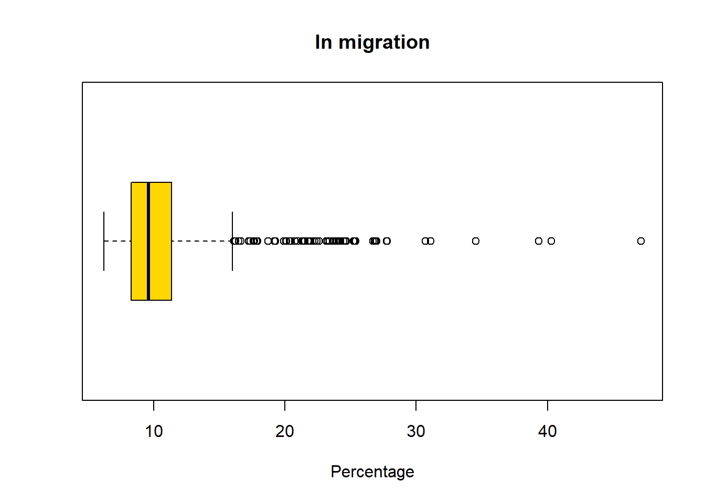
boxplot(pc_data$pct_UK_born ,horizontal=TRUE, main = "UK born", xlab='Percentage', col = "pink")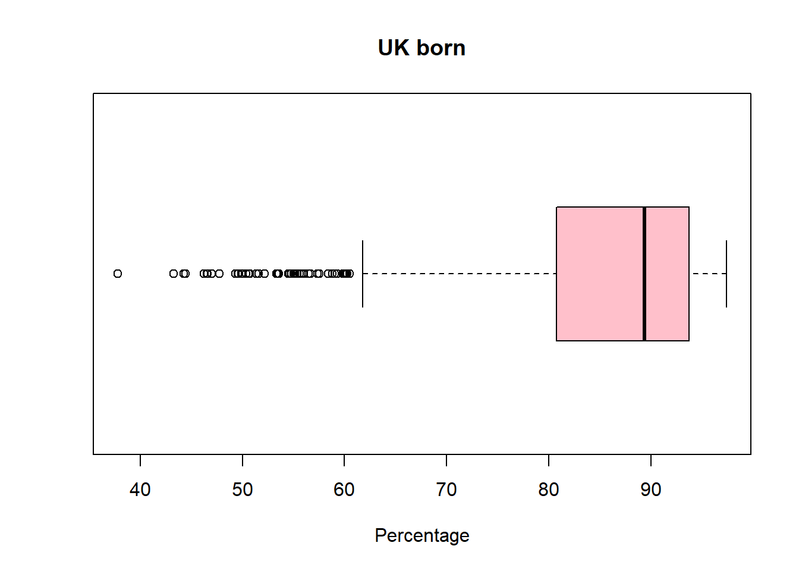
boxplot(pc_data$pct_owned,horizontal=TRUE, main = "Owning house upright", xlab='Percentage', col = "lightblue")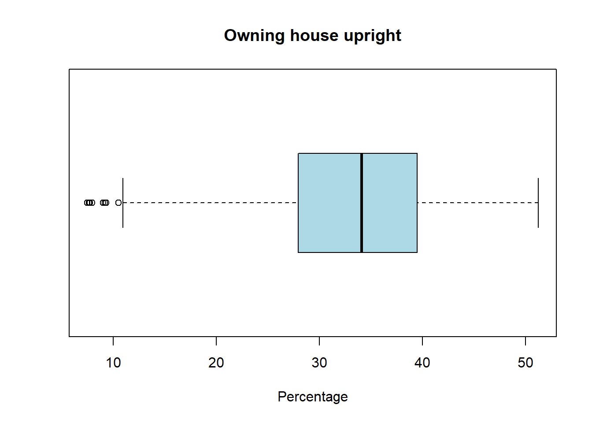
#to compare them together
boxplot(pc_data[,c("pct_in_migration",
"pct_UK_born",
"pct_owned"
)],
horizontal=TRUE,
main = "Owning house upright",
xlab='Percentage',
col = c("gold","pink","lightblue")
)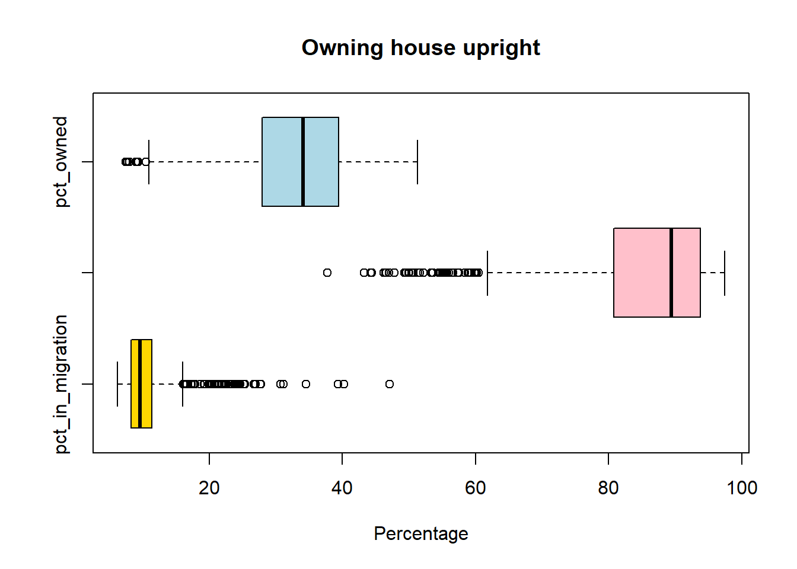
Task 5 Write codes to summary the counts of MPs in each gender (this is in the mp_gendervariable), presenting the table with percentage and showing the barplot.
pc_data %>%
count(mp_gender) %>%
mutate(pct = round(n/sum(n)*100,1)) mp_gender n pct
1 Female 263 40.5
2 Male 387 59.5tab = table(pc_data$mp_gender)
barplot(tab,main = "MP gender in constituency")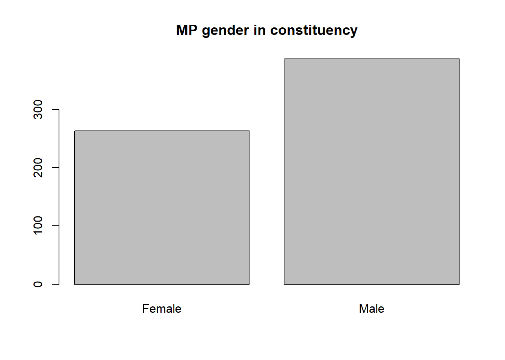
Task 6 Cross tabulation region_name to mp_gender by using the newly created pc_map_new dataset, which joined by the constituency boundary and election dataset.
table(pc_map_new$region_name, pc_map_new$mp_gender)
Female Male
East Midlands 20 27
East of England 16 45
Greater London 38 37
North East 12 15
North West 31 42
Northern Ireland 5 13
Scotland 20 37
South East 39 52
South West 19 39
Wales 15 17
West Midlands 25 32
Yorkshire and the Humber 23 31Task 7 Compare between crime_rate with the pct_social_rented in constituency election dataset. What pattern you can learn from your boxplot?
boxplot(pct_social_rented ~ crime_rate , data = pc_data)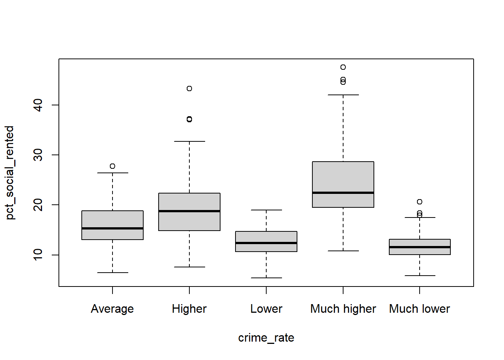